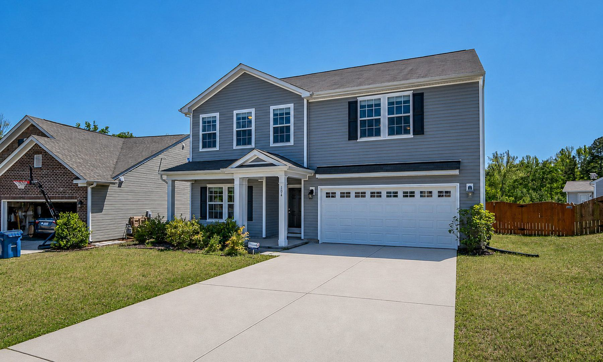
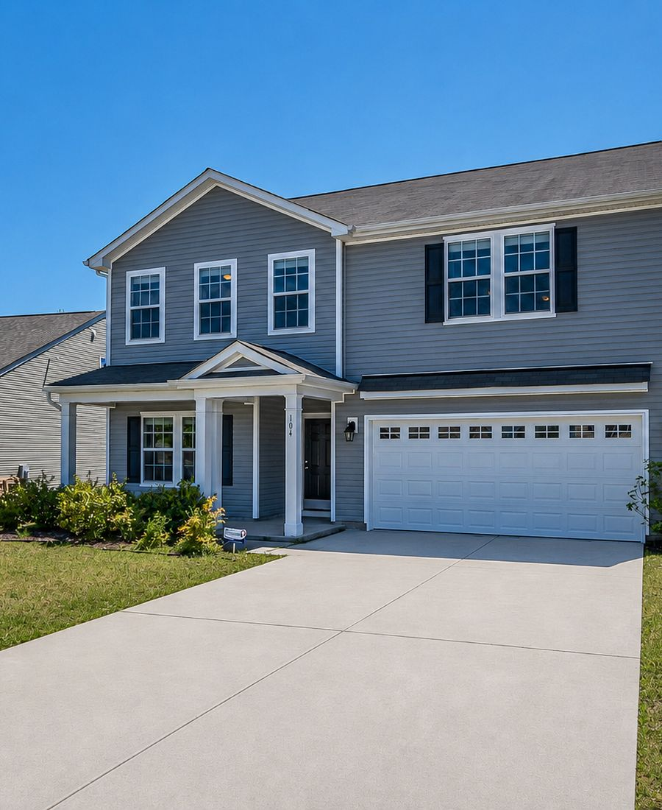
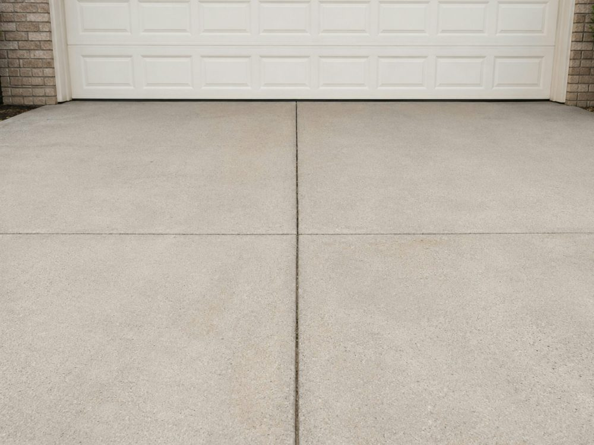
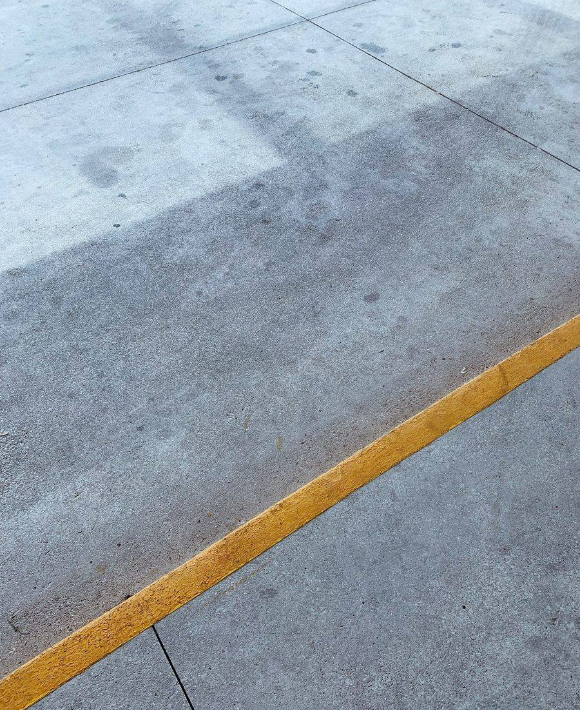
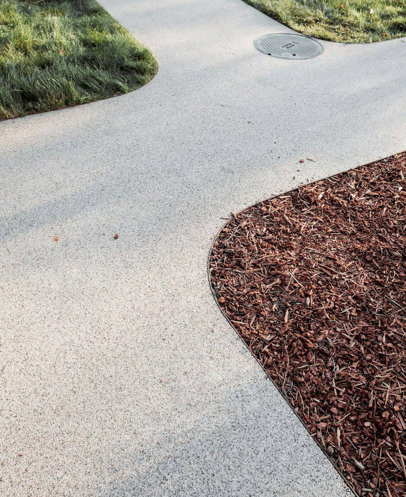

Home / Pressure Washing
Pressure Washing & House Washing in Western Kentucky & Tennessee
House washing, driveways, sidewalks and patios. Siding gets a low-pressure soft wash, concrete gets the pressure, and nothing gets wrecked. The green streaks that make a house look old come right off — it’s the fastest curb appeal win there is.
Most houses that look old are just dirty. The gray cast on the siding, the dark streaks under the gutters, the driveway that’s gone from concrete-colored to something closer to charcoal — none of that is wear. It’s organic growth, and it comes off.
People are consistently surprised by how much of what they were about to spend money replacing only needed washing.
What we clean
- House washing — vinyl, wood, brick and fiber cement siding, soft washed
- Driveways — the single most dramatic before-and-after on any property
- Sidewalks and walkways — including the green film that makes them slick
- Patios and porches — concrete, pavers and stone
- Commercial exteriors — storefronts and rental property




Soft wash vs. pressure wash — and why it matters to you
These get used interchangeably. They shouldn’t be, and this is the single biggest way a washing job goes wrong.
- Soft washing uses low pressure and the right cleaning solution to kill and lift the mildew, algae and mould that cause the staining. This is what belongs on siding, painted surfaces, and anything wood.
- Pressure washing uses genuine force to lift grime out of hard, non-porous surfaces. This is what belongs on concrete — driveways, sidewalks, patios.
Put high pressure on vinyl siding and you don’t just risk cracking it — you drive water up under the laps and behind the wall, where it does the kind of damage you find out about much later. That’s the “they damaged my siding” story everybody’s heard. It comes from using a concrete tool on a house.
Your siding gets soft washed. Your driveway gets pressure washed. Same visit, different tools, on purpose.
How often is worth it?
Around here, most homes want a house wash every year or two — the humidity through a Western Kentucky and Tennessee summer means north-facing walls and shaded sides grow back faster than the rest. Driveways depend entirely on tree cover. If you’re under oaks, you’ll notice sooner.
It’s not just cosmetic, either. Mildew and algae hold moisture against the surface. Left long enough on wood, that’s how you get rot instead of a stain.
Where we work
Murray, Mayfield, Paducah, Benton, Fancy Farm, Arlington, Symsonia, Hickory, Wingo, Sedalia, Lowes, and the rest of Graves, Calloway, Marshall, McCracken and Carlisle counties.
Next step
See what’s under the dirt.
Send a few details or just call. Free estimate, written down, no obligation.